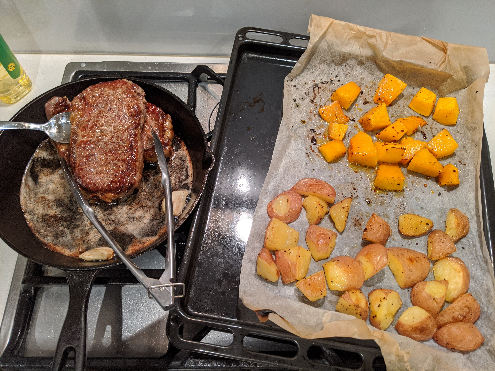

Steak

Description
Using a good cut of steak and seasoning with garlic and fresh herbs, you can easily replicate the steakhouse experience at home. Serve with roast vegetables, salad, or rice.
Ingredients
- Steak, porterhouse or scotch fillet
- Salt
- Pepper
- Garlic powder
- 3 cloves of garlic, peeled
- Paprika
- 25g butter, unsalted
- 3 sprigs of rosemary OR 6 sprigs of thyme
- 1 tablespoon canola oil, or other oil with high smoke point
Steps
- Pat steak dry on all sides.
- Heat cast iron on high heat until smoking. Add oil.
- Season steak with generous amount of salt, and garlic powder, paprika, and pepper.
- Add steak to pan, pressing lightly for 30 seconds.
- After 2 minutes, when steak is nicely browned, flip.
- After 1 minute, add butter, garlic, and herb to pan.
- Spoon the melted butter over the steak to baste it.
- Remove from heat after another 1-2 minutes.
- Rest for 5-10 minutes then serve.
Home